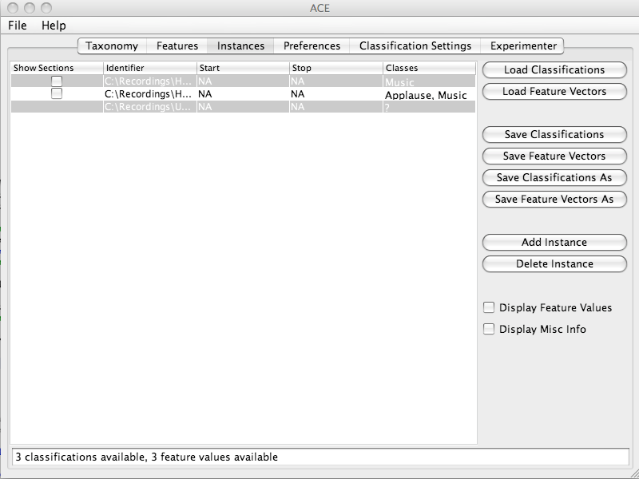
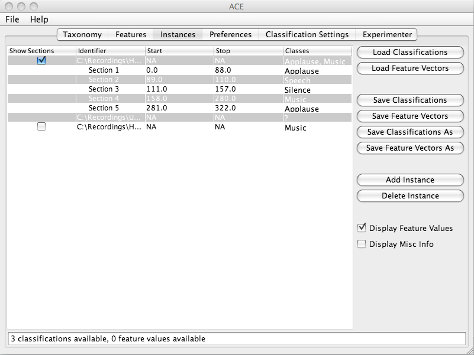
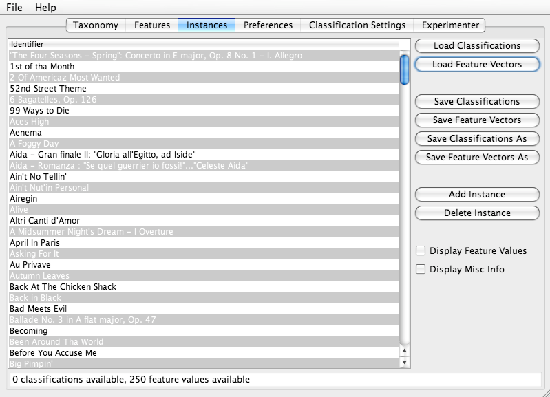
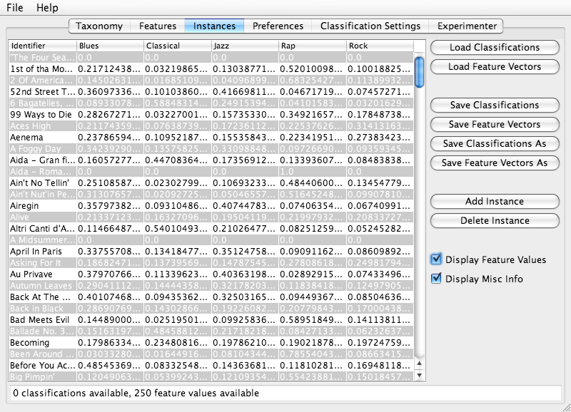
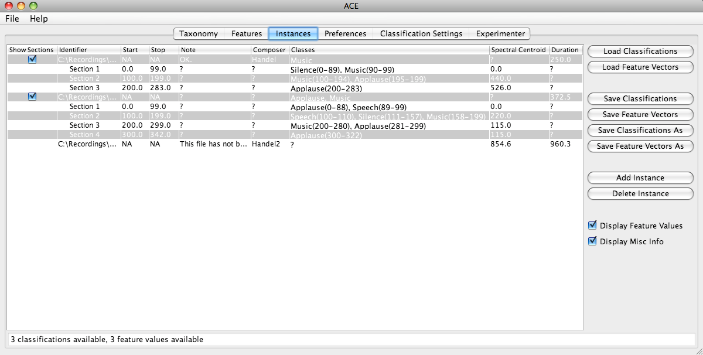

| Instances Panel |
|---|
Panel Overview
This panel displays feature values and model classifications. Both ACE XML feature vectors files and ACE XML model classifications files are displayed simultaneously in this one panel. One row of the instances table contains both information about the feature value and the model classification for that instance. This panel allows users to view, edit, load and save the classifications and feature values of a data set. This information relates to the actual feature values, not the features themselves.The instances are displayed in table form. The contents of any row may be changed by double clicking on any entry on the table (or clicking once, in the case of check boxes). Columns may also be reordered by dragging their headings. All instances must have unique identifiers and must have at least 1 dimension. Any attempt to enter invalid entries will be rejected by the system. If feature vectors and classifications are loaded for the same instance, the data will be merged into one row. By default, feature values and miscellaneous information is not displayed. The checkboxes Display Feature Values and Show Misc Info must be selected for this information to be displayed.
Panel Contents
If a data set with subsections has been loaded, the Show Subsections column will contain checkboxes for each instance that has subsections that, when selected, will display all of the sub-sections of that instance. The identifier column specifies the unique name of a instance. The Start column indicates the point in time (in seconds) that a subsection of an instance begins. The Stop column specifies the point in time (in seconds) that a subsection of an instance ends. The Classes column should only displayed if an ACE XML classifications file has been loaded and will display the given classification(s) for each instance.
The status bar displays the total number of loaded feature vectors and the total number of loaded classifications.
The Display Feature Values button causes the feature values columns to become visible.
The Show Misc Info button causes columns containing miscellaneous information to become visible.
The Add Instance button causes a new instance to be added to the end of the table. It is given a unique name.
The Delete Instance button causes the selected instance to be deleted from the table.
The Load Feature Vectors button loads a feature_vectors_file ACE XML file into memory and displays it. If feature values are already loaded, the user will be given a prompt asking them if they want to continue and previously loaded values will be overwritten.
The Load Classifications button loads a model_classifications_file ACE XML file into memory and displays it. If classifications are already loaded, the user will be given a prompt asking them if they want to continue and previously loaded classes will be overwritten.
The Save Feature Vectors button saves the currently loaded feature values into the path referred to in the File Path Settings dialog box as a feature_vectors_file ACE XML file. The Save Feature Vectors As button allows the user to choose the path to which the file is to be saved and updates the path in the File Path Settings dialog box.
The Save Classifications button saves the currently loaded classifications into the path referred to in the File Path Settings dialog box as a classifications_file ACE XML file. The Save Classifications As button allows the user to choose the path to which the file is to be saved and updates the path in the File Path Settings dialog box.
Screen Shot - Model Classifications with subsections (checkboxes not selected)

Screen Shot - Model Classifications with subsections (one checkbox selected)

Screen Shot - Feature Vectors with no subsections

Screen Shot - Feature Vectors with no subsections (Display Feature Values checkbox selected)

Screen Shot - Model Classifications and Feature Vectors with subsections (all checkboxes selected)

Questions and Comments